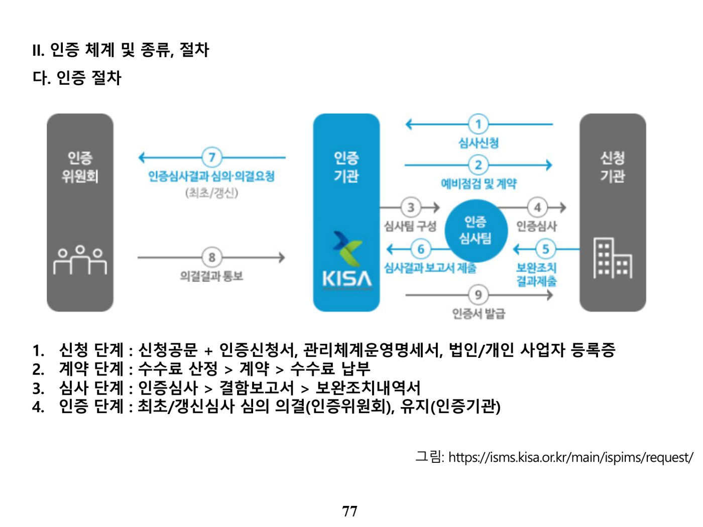

목차 (원본 p.2-4)
▸ 원본 p.2 표: 목차·출제빈도
| 분류 | 빈도 |
|---|---|
| 개인정보보호법 | 상 |
| 개인정보의 안전성 확보조치 기준 | 상 |
| 표준 개인정보보호 지침 | 하 |
| 정보통신망 이용촉진 및 정보보호 등에 관한 법률 | 중 |
| 개인정보의 기술적 관리적 보호조치 기준 | 하 |
| ISMS-P | 상 |
| 정보보호 등급제 | 하 |
| 정보보호 준비도 평가 | 하 |
| 개인정보 비식별화 | 중 |
▸ 원본 p.4 표: 법령 구성 체계
| 구분 | 구성 체계 |
|---|---|
| 개인정보보호법 | 개인정보보호법 → 개인정보보호법 시행령/시행규칙 → 표준 개인정보보호 지침, 개인정보의 안전성 확보조치 기준 |
| 정보통신망 이용촉진 및 정보보호에 관한 법률 | 정보통신망법 → 정보통신망법 시행령/시행규칙 → 개인정보의 기술적 관리적 보호조치 기준 |
| 인증제도 | ISMS, PIMS → ISMS-P, 정보보호 등급제, 정보보호 준비도 평가 |
개인정보보호법 (원본 p.5-29)
가. 법 구성 체계(총 9개 장)
▸ 원본 p.5 표: 개인정보보호법 구성
| 장 | 주요 내용 |
|---|---|
| 제1장 총칙 | 목적, 정의, 개인정보보호원칙, 다른 법률과의 관계 등 |
| 제2장 개인정보 보호정책의 수립 | 개인정보보호위원회, 기본계획/시행계획 수립, 개인정보보호지침, 개인정보보호 관리수준 및 실태점검, 자율규제촉진 등 |
| 제3장 개인정보의 처리 | 수집·이용·제공 등 처리기준, 민감정보·고유식별정보 제한, 영상정보처리기기 제한 등 |
| 제4장 개인정보의 안전한 관리 | 안전조치의무, 개인정보파일 등록·공개, 개인정보영향평가, 유출통지제도 등 |
| 제5장 정보주체의 권리 보장 | 열람요구권, 정정삭제요구권, 처리정지요구권, 권리행사방법 및 절차, 손해배상책임 등 |
| 제6장 개인정보 분쟁조정위원회 | 분쟁조정위원회 설치·구성, 분쟁조정의 신청방법·절차·효력, 집단분쟁조정 제도 등 |
| 제7장 개인정보 단체소송 | 단체소송 대상, 소송허가요건, 확정판결의 효력 등 |
| 제8장 보칙 | 적용제외, 금지행위, 침해사실신고, 시정조치 등 |
| 제9장 벌칙 | 벌칙, 몰수·추징, 과태료 및 양벌규정 등 |
나. 개인정보의 수집·이용 및 제공(§15, §17)
개인정보처리자는 다음 어느 하나에 해당하는 경우 개인정보를 수집할 수 있으며 그 수집목적의 범위에서 이용할 수 있다: ① 정보주체의 동의를 받은 경우, ② 법률에 특별한 규정이 있거나 법령상 의무를 준수하기 위하여 불가피한 경우, ③ 공공기관이 법령 등에서 정하는 소관업무 수행을 위하여 불가피한 경우, ④ 정보주체와의 계약 체결 및 이행을 위하여 불가피하게 필요한 경우, ⑤ 정보주체 또는 법정대리인이 의사표시를 할 수 없는 상태이거나 주소불명 등으로 사전 동의를 받을 수 없는 경우로서 명백히 정보주체 또는 제3자의 급박한 생명·신체·재산의 이익을 위해 필요한 경우, ⑥ 개인정보처리자의 정당한 이익 달성을 위해 필요한 경우로서 명백히 정보주체의 권리보다 우선하는 경우(정당한 이익과 상당한 관련이 있고 합리적 범위를 초과하지 않는 경우에 한함).
동의를 받을 때에는 ① 개인정보의 수집·이용 목적, ② 수집하려는 개인정보의 항목, ③ 개인정보의 보유 및 이용 기간, ④ 동의를 거부할 권리가 있다는 사실 및 동의 거부에 따른 불이익이 있는 경우 그 불이익의 내용을 알려야 한다.
개인정보를 제3자에게 제공(공유 포함)하려는 경우에는 ① 개인정보를 제공받는 자, ② 제공받는 자의 이용목적, ③ 제공하는 개인정보의 항목, ④ 제공받는 자의 보유 및 이용 기간, ⑤ 동의 거부권 및 불이익 내용을 알리고 동의를 받아야 한다.
다. 개인정보의 파기(§21)
개인정보처리자는 처리목적 달성 등으로 개인정보가 불필요하게 되었을 때에는 지체 없이 복구·재생되지 않도록 파기해야 한다(다른 법령에 따라 보존해야 하는 경우에는 분리 보관). 파기 방법(시행령 §16)은 전자적 파일 형태인 경우 복원 불가능한 방법으로 영구 삭제, 그 외 기록물·인쇄물·서면 등은 파쇄 또는 소각한다.
라. 민감정보와 고유식별정보(§23, §24)
민감정보: 사상·신념, 노동조합·정당의 가입·탈퇴, 정치적 견해, 건강, 성생활 등에 관한 정보, 그 밖에 정보주체의 사생활을 현저히 침해할 우려가 있는 정보로서 대통령령으로 정하는 정보(유전정보, 범죄경력자료 등). 처리 시 분실·도난·유출·위조·변조·훼손되지 않도록 안전성 확보조치가 필요하다.
고유식별정보(시행령 §19): 주민등록번호, 여권번호, 운전면허번호, 외국인등록번호 — 원칙적으로 처리 금지이나 별도 동의를 받거나 법령에서 구체적으로 요구·허용하는 경우 처리 가능하다.
마. 개인정보의 안전한 관리
안전조치의무(§29): 개인정보처리자는 내부관리계획 수립·시행, 접속기록 보관 등 대통령령이 정하는 바에 따라 안전성 확보에 필요한 기술적·관리적·물리적 조치를 하여야 한다(시행령§30 → 개인정보 안전성 확보조치 기준으로 구체화).
개인정보보호책임자 지정(§31): 업무는 ① 개인정보보호계획의 수립·시행, ② 처리실태·관행의 정기적 조사·개선, ③ 처리 관련 불만의 처리 및 피해구제, ④ 유출·오용·남용 방지를 위한 내부통제시스템 구축, ⑤ 보호교육계획 수립·시행, ⑥ 개인정보파일의 보호·관리·감독, ⑦ 그 밖에 대통령령으로 정한 업무이다.
개인정보파일의 등록(§32): 공공기관의 장은 개인정보파일 운용 시 명칭, 운영근거·목적, 기록되는 항목, 처리방법, 보유기간, 제공받는 자 등을 행정안전부장관에게 등록해야 한다.
개인정보영향평가(§33, 시행령§35): 정보주체의 개인정보 침해가 우려되는 경우 위험요인 분석과 개선사항 도출을 위한 평가를 수행한다. 수행 대상은 ① 5만명 이상 정보주체에 관한 민감정보·고유식별정보 처리가 수반되는 개인정보파일, ② 연계 결과 50만명 이상의 정보주체에 관한 개인정보가 포함되는 개인정보파일, ③ 100만명 이상의 정보주체에 관한 개인정보파일, ④ 기존 영향평가를 받은 후 운용체계를 변경하려는 경우(변경된 부분에 한정)이다.
개인정보의안전성확보조치기준 (원본 p.30-65)
가. 개인정보의 안전성 확보조치 기준 — 조문 구성
▸ 원본 p.30 표: 안전성 확보조치 기준 목차
| 조항 | 제목 | 조항 | 제목 |
|---|---|---|---|
| 제1조 | 목적 | 제8조 | 접속기록의 보관 및 점검 |
| 제2조 | 정의 | 제9조 | 악성프로그램 등 방지 |
| 제3조 | 안전조치 기준 적용 | 제10조 | 관리용 단말기의 안전조치 |
| 제4조 | 내부 관리계획의 수립, 시행 | 제11조 | 물리적 안전조치 |
| 제5조 | 접근 권한의 관리 | 제12조 | 재해, 재난 대비 안전조치 |
| 제6조 | 접근통제 | 제13조 | 개인정보의 파기 |
| 제7조 | 개인정보의 암호화 | [별표] | 개인정보처리자 유형 및 보유량에 따른 안전조치 기준 |
▸ 원본 p.31 표: 용어의 정의
| 용어 | 정의 |
|---|---|
| 정보주체 | 처리되는 정보에 의하여 알아볼 수 있는 사람으로서 그 정보의 주체가 되는 사람 |
| 개인정보파일 | 개인정보를 쉽게 검색할 수 있도록 일정한 규칙에 따라 체계적으로 배열하거나 구성한 개인정보의 집합물 |
| 개인정보처리자 | 업무를 목적으로 개인정보파일을 운용하기 위하여 스스로 또는 다른 사람을 통하여 개인정보를 처리하는 공공기관, 법인, 단체 및 개인 등 |
| 개인정보취급자 | 개인정보처리자의 지휘·감독을 받아 개인정보를 처리하는 업무를 담당하는 자(임직원, 파견근로자, 시간제근로자 등) |
| 개인정보 처리시스템 | 개인정보를 처리할 수 있도록 체계적으로 구성한 데이터베이스시스템 등 |
| 관리용 단말기 | 개인정보처리시스템의 관리, 운영, 개발, 보안 등의 목적으로 개인정보처리시스템에 직접 접속하는 단말기 |
나. 내부관리계획, 접근권한관리, 접근통제(제4조~제6조)
내부관리계획(§4): 개인정보보호책임자 지정, 책임자·취급자의 역할·책임, 취급자 교육, 접근권한 관리, 접근통제, 암호화 조치, 접속기록 보관·점검, 악성프로그램 방지, 물리적 안전조치, 보호조직 구성·운영, 유출사고 대응계획, 위험도 분석·대응방안, 재해·재난 대비 물리적 안전조치, 위탁 시 수탁자 관리·감독 등을 포함해야 하며, 개인정보보호책임자는 연 1회 이상 이행실태를 점검·관리해야 한다.
접근권한의 관리(§5): 접근권한은 업무 수행에 필요한 최소한의 범위로 차등 부여하고, 인사이동 시 지체 없이 변경·말소하며, 권한 부여·변경·말소 내역은 최소 3년간 보관한다. 개인정보취급자별로 사용자 계정을 발급(공유 금지)하고, 비밀번호 작성규칙을 수립·적용하며, 로그인 실패 시 접근을 제한하는 기술적 조치를 취한다.
접근통제(§6): 접속권한을 IP주소 등으로 제한하고 불법적 유출 시도를 탐지·대응하며, 외부 접속 시 VPN·전용선 등 안전한 접속수단을 적용한다. 일정 시간 이상 업무처리가 없으면 자동으로 접속을 차단하고, 업무용 모바일기기에는 비밀번호 설정 등 보호조치를 한다.
다. 암호화, 접속기록 보관, 물리적 조치, 파기(제7조~제13조)
개인정보의 암호화(§7): 고유식별정보·비밀번호·바이오정보를 정보통신망으로 송신하거나 보조저장매체로 전달할 때는 암호화해야 하며, 비밀번호·바이오정보는 저장 시 암호화(비밀번호는 복호화 불가능한 일방향 암호화)한다. 인터넷 구간 및 DMZ에 고유식별정보를 저장할 때도 암호화한다.
접속기록의 보관 및 점검(§8): 개인정보취급자의 접속기록을 6개월 이상 보관·관리하고, 반기별 1회 이상 점검한다.
재해·재난 대비 안전조치(§12) 및 개인정보의 파기(§13): 위기대응 매뉴얼과 백업·복구 계획을 마련하며, 파기 시 완전파괴(소각·파쇄), 전용 소자장비를 이용한 삭제, 복원 불가능하도록 초기화·덮어쓰기 중 하나의 방법을 사용한다.
라. 개인정보처리자 유형 및 안전조치 기준(별표)
▸ 원본 p.40 표: 유형별 안전조치 기준
| 유형 | 적용 대상 |
|---|---|
| 유형1 (완화) | 1만명 미만의 정보주체에 관한 개인정보를 보유한 소상공인, 단체, 개인 |
| 유형2 (표준) | 100만명 미만의 정보주체 개인정보를 보유한 중소기업 / 10만명 미만의 정보주체 개인정보를 보유한 대기업·중견기업·공공기관 / 1만명 이상의 정보주체 개인정보를 보유한 소상공인·단체·개인 |
| 유형3 (강화) | 100만명 이상의 정보주체 개인정보를 보유한 대기업·중견기업·공공기관·중소기업·단체 |
마. 표준 개인정보보호지침 개요
▸ 원본 p.49-51 표: 표준 개인정보보호지침 구성(통합)
| 장 | 주요 내용 |
|---|---|
| 제1장 총칙 | 목적, 용어의 정의, 적용범위, 개인정보 보호 원칙, 다른 지침과의 관계 |
| 제2장 개인정보 처리 기준 | 1절 수집·이용·제공·목적외이용, 파기방법, 동의방법 등 / 2절 처리위탁(수탁자 선정, 보호조치 의무) / 3절 처리방침 작성 / 4절 보호책임자(공개·교육) / 5절 유출 통지·신고 / 6절 정보주체 권리보장 |
| 제3장 영상정보처리기기 설치·운영 | 1절 설치(적용범위, 운영관리지침, 관리책임자, 안내판) / 2절 개인영상정보 처리(이용·제공 제한, 보관·파기) / 3절 열람 등 요구 / 4절 보호조치 |
| 제4장 공공기관 개인정보파일 등록·공개 | 1절 총칙 / 2절 등록주체와 절차 / 3절 관리 및 공개 |
| 제5장 보칙 | 친목단체 벌칙조항 적용배제, 경과조치 |
바. 정보통신망 이용촉진 및 정보보호 등에 관한 법률(정보통신망법) 개요
▸ 원본 p.55-58 표: 정보통신망법 구성(통합)
| 장 | 주요 내용 |
|---|---|
| 제1장 총칙 | 목적, 정의, 제공자·이용자 책무, 정보통신망 이용촉진 및 정보보호 시책 마련 등 |
| 제2장 정보통신망의 이용촉진 | 기술개발 추진, 표준화 및 인증, 정보내용물 개발지원, 인터넷 이용 확산 등 |
| 제4장 개인정보의 보호 | 1절 수집·이용·제공(동의, 주민등록번호 사용제한 등) / 2절 관리 및 파기(보호책임자 지정, 처리방침 공개, 유출 통지·신고) / 3절 이용자의 권리(손해배상 등) |
| 제5장 정보통신망에서의 이용자 보호 등 | 청소년 보호, 게시판 이용자 본인확인, 불법정보 유통금지 등 |
| 제6장 정보통신망의 안정성 확보 등 | 정보보호 사전점검, 정보보호 최고책임자 지정, 정보보호 관리체계의 인증(ISMS), 침해사고의 대응 등 |
| 제7장 통신과금서비스 | 제공자 등록, 안전성 확보, 이용자 권리, 분쟁조정 등 |
| 제8장 국제협력 | 국제협력, 국외 이전 개인정보의 보호, 상호주의 |
▸ 원본 p.59 표: 용어의 정의
| 용어 | 정의 |
|---|---|
| 정보통신망 | 정보통신설비를 이용하거나 전기통신설비와 컴퓨터 및 컴퓨터 이용기술을 활용하여 정보를 수집·가공·저장·검색·송신 또는 수신하는 정보통신체제 |
| 개인정보 | 생존하는 개인에 관한 정보로서 성명·주민등록번호 등에 의하여 특정 개인을 알아볼 수 있는 정보(다른 정보와 쉽게 결합하여 알아볼 수 있는 경우 포함) |
| 침해사고 | 해킹, 컴퓨터바이러스, 논리폭탄, 메일폭탄, 서비스거부 또는 고출력 전자기파 등의 방법으로 정보통신망 또는 관련 정보시스템을 공격하는 행위로 발생한 사태 |
정보보호 최고책임자(§45의3)의 총괄업무: ① 정보보호 관리체계의 수립 및 관리·운영, ② 정보보호 취약점 분석·평가 및 개선, ③ 침해사고의 예방 및 대응, ④ 사전 정보보호대책 마련 및 보안조치 설계·구현, ⑤ 정보보호 사전 보안성 검토, ⑥ 중요정보의 암호화 및 보안서버 적합성 검토(구현이 아님), ⑦ 그 밖에 필요한 조치의 이행.
정보보호 관리체계 인증(ISMS, §47) 의무 대상자(시행령§49): 정보통신망서비스 제공자, 집적정보통신시설사업자, 연간매출액·세입 1,500억원 이상인 상급종합병원·재학생 1만명 이상 학교, 정보통신서비스부문 매출 100억원 이상, 일일평균 이용자 100만명 이상인 자(전자금융업 금융회사 제외).
개인정보의기술적관리적보호조치기준 (원본 p.66-74)
가. 조문 구성
▸ 원본 p.66 표: 기술적·관리적 보호조치 기준 목차
| 조항 | 제목 |
|---|---|
| 제1조 | 목적 |
| 제2조 | 정의 |
| 제3조 | 내부관리계획의 수립, 시행 |
| 제4조 | 접근통제 |
| 제5조 | 접속기록의 위, 변조방지 |
| 제6조 | 개인정보의 암호화 |
| 제7조 | 악성프로그램 방지 |
| 제8조 | 물리적 접근 방지 |
| 제9조 | 출력, 복사 시 보호조치 |
| 제10조 | 개인정보 표시 제한 보호조치 |
| 제11조 | 규제의 재검토 |
▸ 원본 p.67 표: 용어의 정의
| 용어 | 정의 |
|---|---|
| 개인정보관리책임자 | 이용자의 개인정보보호 업무를 총괄하거나 업무처리를 최종 결정하는 임직원 |
| 개인정보취급자 | 개인정보를 수집, 보관, 처리, 이용, 제공, 관리 또는 파기 등의 업무를 하는 자 |
| 내부관리계획 | 정보통신서비스 제공자등이 개인정보의 안전한 취급을 위하여 보호조직 구성, 취급자 교육, 보호조치 등을 규정한 계획 |
| 접속기록 | 이용자·취급자 등이 개인정보처리시스템에 접속하여 수행한 업무내역에 대해 식별자·접속일시·접속지·수행업무 등 접속 사실을 전자적으로 기록한 것 |
나. 접근통제(제4조)
정보통신서비스 제공자등은 개인정보처리시스템에 대한 접근권한을 서비스 제공에 필요한 관리책임자·취급자에게만 부여하며, 인사이동 시 지체 없이 변경·말소하고 그 내역을 최소 5년간 보관한다. 외부에서 접속이 필요한 경우 안전한 인증수단을 적용하며, IP주소 제한 및 유출시도 탐지 기능을 갖춘 시스템을 설치·운영한다. 전년도 말 기준 직전 3개월간 이용자수가 일일평균 100만명 이상이거나 매출액 100억원 이상인 사업자는 개인정보를 다운로드·파기하거나 접근권한을 설정할 수 있는 취급자의 컴퓨터 등을 물리적·논리적으로 망분리해야 한다.
다. 비밀번호 작성규칙
- 영문·숫자·특수문자 중 2종류 이상을 조합하여 최소 10자리 이상, 또는 3종류 이상을 조합하여 최소 8자리 이상의 길이로 구성
- 연속적인 숫자나 생일, 전화번호 등 추측하기 쉬운 개인정보 및 아이디와 비슷한 비밀번호는 사용하지 않도록 권고
- 비밀번호에 유효기간을 설정하여 반기별 1회 이상 변경(연 1회가 아님)
라. 개인정보의 암호화(제6조)
저장 시 암호화 — 비밀번호는 복호화되지 않도록 일방향 암호화하여 저장한다. 다음 정보는 안전한 암호알고리즘으로 암호화하여 저장해야 한다: ① 주민등록번호, ② 여권번호, ③ 운전면허번호, ④ 외국인등록번호, ⑤ 신용카드번호, ⑥ 계좌번호, ⑦ 바이오정보(주민등록번호·여권번호·운전면허번호·외국인등록번호·바이오정보는 안전한 암호알고리즘에 의한 양방향 암호화, 비밀번호만 일방향 암호화).
송·수신 시 암호화 — 개인정보 및 인증정보를 송·수신할 때는 안전한 보안서버 구축 등을 통해 암호화한다. 보안서버 기능은 ① 웹서버에 SSL 인증서를 설치하여 송·수신 정보를 암호화하는 기능, ② 웹서버에 암호화 응용프로그램을 설치하여 송·수신 정보를 암호화하는 기능 중 하나이다. 이용자의 개인정보를 컴퓨터, 모바일 기기 및 보조저장매체 등에 저장할 때에도 암호화한다.
마. 접속기록 관리, 악성프로그램 방지, 물리적 접근 방지
접속기록의 위·변조 방지(§5): 취급자의 접속기록을 월 1회 이상 정기적으로 확인·감독하고 최소 6개월 이상 보관·관리한다(기간통신사업자는 2년). 접속기록은 별도의 물리적 저장장치에 보관하고 정기적으로 백업한다.
악성프로그램 방지(§7): 백신 소프트웨어 등 보안프로그램을 설치·운영하고, 자동 업데이트 또는 일 1회 이상 업데이트를 실시하며, 보안업데이트 공지가 있는 경우 즉시 반영한다.
물리적 접근 방지(§8)~개인정보 표시 제한(§10): 전산실·자료보관실 등에 대한 출입통제 절차를 수립·운영하고, 개인정보가 포함된 서류·보조저장매체는 잠금장치가 있는 장소에 보관하며, 반출·입 통제 보안대책을 마련한다. 개인정보 출력 시 용도를 특정하여 출력항목을 최소화하고, 업무처리 과정에서는 개인정보를 마스킹하여 표시를 제한할 수 있다.
ISMS-P (원본 p.75-104)
가. ISMS-P 개요 — 유관기관·법령·고시
▸ 원본 p.75 표: ISMS-P 구성 체계
| 구분 | 구성 체계 |
|---|---|
| 유관 기관 | 과학기술정보통신부, 방송통신위원회, 행정안전부 |
| 법령 | 정보통신망법 제47조, 정보통신망법 제47조의3, 개인정보보호법 제32조의2 |
| 고시 | 정보보호 관리체계 인증등에 관한 고시, 개인정보보호 관리체계 인증등에 관한 고시 |
나. 인증체계 및 종류, 절차
▸ 원본 p.76 표: 인증체계
| 구분 | 역할 | 기관 |
|---|---|---|
| 정책기관 | 법·제도 개선 및 정책 결정, 인증기관 및 심사기관 지정 | 과학기술정보통신부, 방송통신위원회, 행정안전부 |
| 인증기관 | 제도 운영 및 인증품질관리, 신규·특수 분야 인증심사, 인증서 발급, 인증심사원 양성 및 자격관리 | 한국인터넷진흥원(KISA) |
| 심사기관 | 인증심사 수행, 인증서 발급 | 인증기관 지정 심사기관 |

다. 인증기준 체계(3개 영역, 총 102개)
▸ 원본 p.78-79 표: 인증기준 대분류(2개 표 통합)
| 인증 분야 | 인증기준 |
|---|---|
| 1. 관리체계 수립 및 운영 (16개) | 1.1 관리체계 기반 마련 |
| 1.2 위험 관리 | |
| 1.3 관리체계 운영 | |
| 1.4 관리체계 점검 및 개선 | |
| 2. 보호대책 요구사항 (64개) | 2.1 정책, 조직, 자산 관리 |
| 2.2 인적 보안 | |
| 2.3 외부자 보안 | |
| 2.4 물리 보안 | |
| 2.5 인증 및 권한관리 | |
| 2.6 접근통제 | |
| 2.7 암호화 적용 | |
| 2.8 정보시스템 도입 및 개발 보안 | |
| 2.9 시스템 및 서비스 운영관리 | |
| 2.10 시스템 및 서비스 보안관리 | |
| 2.11 사고 예방 및 대응 | |
| 2.12 재해복구 | |
| 3. 개인정보 처리 단계별 요구사항 (22개) | 3.1 개인정보 수집 시 보호조치 |
| 3.2 개인정보 보유 및 이용 시 보호조치 | |
| 3.3 개인정보 제공 시 보호조치 | |
| 3.4 개인정보 파기 시 보호조치 | |
| 3.5 정보주체 권리보호 |
라. 세부 인증기준
▸ 원본 p.80-81 표: 1. 관리체계 수립 및 운영(16개, 2개 표 통합)
| 인증기준 | 세부 항목 |
|---|---|
| 1.1 관리체계 기반 마련 | 1.1.1 경영진의 참여 |
| 1.1.2 최고책임자의 지정 | |
| 1.1.3 조직 구성 | |
| 1.1.4 범위 설정 | |
| 1.1.5 정책 수립 | |
| 1.1.6 자원 할당 | |
| 1.2 위험 관리 | 1.2.1 정보자산 식별 |
| 1.2.2 현황 및 흐름분석 | |
| 1.2.3 위험 평가 | |
| 1.2.4 보호대책 선정 | |
| 1.3 관리체계 운영 | 1.3.1 보호대책 구현 |
| 1.3.2 보호대책 공유 | |
| 1.3.3 운영현황 관리 | |
| 1.4 관리체계 점검 및 개선 | 1.4.1 법적 요구사항 준수 검토 |
| 1.4.2 관리체계 점검 | |
| 1.4.3 관리체계 개선 |
▸ 원본 p.81-87 표: 2. 보호대책 요구사항(64개, 7개 표 통합)
| 인증기준 | 세부 항목 |
|---|---|
| 2.1 정책, 조직, 자산 관리 | 2.1.1 정책의 유지관리 |
| 2.1.2 조직의 유지관리 | |
| 2.1.3 정보자산 관리 | |
| 2.2 인적 보안 | 2.2.1 주요 직무자 지정 및 관리 |
| 2.2.2 직무 분리 | |
| 2.2.3 보안 서약 | |
| 2.2.4 인식제고 및 교육훈련 | |
| 2.2.5 퇴직 및 직무변경 관리 | |
| 2.2.6 보안 위반 시 조치 | |
| 2.3 외부자 보안 | 2.3.1 외부자 현황 관리 |
| 2.3.2 외부자 계약 시 보안 | |
| 2.3.3 외부자 보안 이행 관리 | |
| 2.3.4 외부자 계약 변경 및 만료 시 보안 | |
| 2.4 물리보안 | 2.4.1 보호구역 지정 |
| 2.4.2 출입통제 | |
| 2.4.3 정보시스템 보호 | |
| 2.4.4 보호설비 운영 | |
| 2.4.5 보호구역 내 작업 | |
| 2.4.6 반출입 기기 통제 | |
| 2.4.7 업무환경 보안 | |
| 2.5 인증 및 권한관리 | 2.5.1 사용자 계정 관리 |
| 2.5.2 사용자 식별 | |
| 2.5.3 사용자 인증 | |
| 2.5.4 비밀번호 관리 | |
| 2.5.5 특수 계정 및 권한관리 | |
| 2.5.6 접근권한 검토 | |
| 2.6 접근통제 | 2.6.1 네트워크 접근 |
| 2.6.2 정보시스템 접근 | |
| 2.6.3 응용프로그램 접근 | |
| 2.6.4 데이터베이스 접근 | |
| 2.6.5 무선 네트워크 접근 | |
| 2.6.6 원격접근 통제 | |
| 2.6.7 인터넷 접속 통제 | |
| 2.7 암호화 적용 | 2.7.1 암호정책 적용 |
| 2.7.2 암호키 관리 | |
| 2.8 정보시스템 도입 및 개발보안 | 2.8.1 보안 요구사항 정의 |
| 2.8.2 보안 요구사항 검토 및 시험 | |
| 2.8.3 시험과 운영 환경 분리 | |
| 2.8.4 시험 데이터 보안 | |
| 2.8.5 소스 프로그램 관리 | |
| 2.8.6 운영환경 이관 | |
| 2.9 시스템 및 서비스 운영관리 | 2.9.1 변경관리 |
| 2.9.2 성능 및 장애관리 | |
| 2.9.3 백업 및 복구관리 | |
| 2.9.4 로그 및 접속기록 관리 | |
| 2.9.5 로그 및 접속기록 점검 | |
| 2.9.6 시간 동기화 | |
| 2.9.7 정보자산의 재사용 및 폐기 | |
| 2.10 시스템 및 서비스 보안관리 | 2.10.1 보안시스템 운영 |
| 2.10.2 클라우드 보안 | |
| 2.10.3 공개서버 보안 | |
| 2.10.4 전자거래 및 핀테크 보안 | |
| 2.10.5 정보전송 보안 | |
| 2.10.6 업무용 단말기기 보안 | |
| 2.10.7 보조저장매체 관리 | |
| 2.10.8 패치관리 | |
| 2.10.9 악성코드 통제 | |
| 2.11 사고 예방 및 대응 | 2.11.1 사고 예방 및 대응체계 구축 |
| 2.11.2 취약점 점검 및 조치 | |
| 2.11.3 이상행위 분석 및 모니터링 | |
| 2.11.4 사고 대응 훈련 및 개선 | |
| 2.11.5 사고 대응 및 복구 | |
| 2.12 재해복구 | 2.12.1 재해, 재난 대비 안전조치 |
| 2.12.2 재해 복구 시험 및 개선 |
▸ 원본 p.88-89 표: 3. 개인정보 처리 단계별 요구사항(22개, 2개 표 통합)
| 인증기준 | 세부 항목 |
|---|---|
| 3.1 개인정보 수집 시 보호조치 | 3.1.1 개인정보 수집 제한 |
| 3.1.2 개인정보의 수집 동의 | |
| 3.1.3 주민등록번호 처리 제한 | |
| 3.1.4 민감정보 및 고유식별정보의 처리 제한 | |
| 3.1.5 간접수집 보호조치 | |
| 3.1.6 영상정보처리기기 설치, 운영 | |
| 3.1.7 홍보 및 마케팅 목적 활용 시 조치 | |
| 3.2 개인정보 보유 및 이용 시 보호조치 | 3.2.1 개인정보 현황관리 |
| 3.2.2 개인정보 품질보장 | |
| 3.2.3 개인정보 표시제한 및 이용 시 보호조치 | |
| 3.2.4 이용자 단말기 접근 보호 | |
| 3.2.5 개인정보 목적 외 이용 및 제공 | |
| 3.3 개인정보 제공 시 보호조치 | 3.3.1 개인정보 제3자 제공 |
| 3.3.2 업무 위탁에 따른 정보주체 고지 | |
| 3.3.3 영업의 양수 등에 따른 개인정보의 이전 | |
| 3.3.4 개인정보의 국외이전 | |
| 3.4 개인정보 파기 시 보호조치 | 3.4.1 개인정보의 파기 |
| 3.4.2 처리목적 달성 후 보유 시 조치 | |
| 3.4.3 휴면 이용자 관리 | |
| 3.5 정보주체 권리보호 | 3.5.1 개인정보처리방침 공개 |
| 3.5.2 정보주체 권리보장 | |
| 3.5.3 이용내역 통지 |
마. ISMS/ISMS-P 업무수행절차 및 물리보안 통제사항
ISMS(P) 업무수행절차는 수립 → 구현과 운영 → 모니터링과 검토 → 관리와 개선의 순으로 진행된다. 물리적 보안 통제분야는 물리적 보호구역(보호구역 지정, 보호설비, 보호구역 내 작업, 출입통제, 모바일기기 반출입), 시스템 보호(케이블보안, 시스템 배치 및 관리), 사무실 보안(개인업무환경보안, 공용업무환경보안)으로 구성되며, "개발과 운영 환경 분리"는 물리보안이 아니라 정보시스템 도입 및 개발보안(2.8) 통제사항이다.
정보보호등급제 (원본 p.105-107)
가. 개요·근거·기대효과
근거: 정보통신망 이용촉진 및 정보보호 등에 관한 법률 제47조의5, 동법 시행령 제55조의2~제55조의5, 정보보호관리등급 부여에 관한 고시(과학기술정보통신부고시 제2016-40호)
정의: 정보보호관리체계(ISMS)를 유지하는 기업을 대상으로 정보보호 수준을 측정하여 '우수', '최우수' 등급을 부여하는 제도
기대효과: 이용자에게 객관적인 기업 선택 기준 제시, 기업의 신뢰수준 및 비교우위 경쟁력 확보 지원, 기업의 정보보호 활동 기준 및 목표수준 마련
나. 인증체계
▸ 원본 p.106 표: 인증체계
| 구분 | 역할 | 기관 |
|---|---|---|
| 정책기관 | 법·제도 개선 및 정책 결정 | 과학기술정보통신부 |
| 인증기관 | 등급 제도운영, 등급 심사 수행, 등급위원회 운영 | 한국인터넷진흥원(KISA) |
| 정보보호 관리등급 위원회 | 등급 심사 결과 심의·의결 | - |
ISMS 인증 범위는 전사(全社) 범위로 1년 이상 정보보호 관리체계를 운영해야 하며, 인증 유지기간은 3년간 연속 유지가 필요하다.
다. 등급 부여기준
▸ 원본 p.107 표: 등급 부여기준
| 등급 | 등급 설명 | 등급 취득 기준 |
|---|---|---|
| 우수 | 기업에 내재된 정보보호 통제 및 프로세스를 지속적으로 측정·관리하며 정기적으로 정보보호 상태를 점검하는 단계 | 우수 등급(공통+우수)에 해당하는 세부평가기준을 모두 만족 |
| 최우수 | 정보보호 통제 활동에서 얻어진 문제점을 지속적으로 개선·반영하여 정보보호 수준을 최적화하는 단계 | 우수등급과 최우수 등급(공통+우수+최우수)의 세부 평가기준을 모두 만족 |
평가 영역은 정보보호 관리체계 구축 범위 및 운영 기간, 정보보호를 위한 전담조직·예산(전담 조직·인력, 예산, 정보보호 현황 공개), 정보보호 관리활동(5단계) 및 보호조치수준(13분야)으로 구성된다.
정보보호준비도평가 (원본 p.108-112)
가. 추진체계
▸ 원본 p.108 표: 추진체계
| 기관 | 역할 |
|---|---|
| 과학기술정보통신부 | 정보보호 준비도 평가 주무부처로서 평가기관 등록 및 제도·정책 수립 |
| 한국인터넷진흥원(KISA) | 과학기술정보통신부로부터 업무를 위탁받아 평가기관 등록·지원, 평가기준·방법 개선 |
| 평가기관 | 정보보호 준비도 평가 수행 및 평가등급 부여 |
| 심의위원회 | 준비도 평가 결과에 대한 최종 심의·의결 |
나. 평가등급
▸ 원본 p.109 표: 정보보호준비도평가 등급
| 등급 | 등급 설명 | 예상 기업 |
|---|---|---|
| AAA | 정보보호 준비 정도가 우량하며, 환경변화 및 침해 위협에 대한 예방적 대처까지 가능 | 국가 사회적 파급력이 큰 대국민 서비스 제공 기업 |
| AA | 정보보호 준비 정도가 양호하며, 환경변화 및 침해 위협 시 적절한 대처가 가능 | 다량의 개인정보보유 기업 |
| A | 정보보호 준비 정도가 양호하나, 환경변화 및 침해 위협정도에 따라 대처능력이 제한적 | 非ICT 분야 대기업, 일정규모 이상의 정보통신 서비스 제공자 |
| BB | 정보보호 준비 정도가 보통이며, 환경변화 및 침해 위협정도에 따라 대처능력이 제한적 | 인터넷을 이용해 주된 사업을 영위하는 ICT 분야 중소·중견 기업 |
| B | 기본적인 정보보호 관리활동이 준비된 기업 | 인터넷을 보조로 활용해 사업을 영위하는 非ICT 분야 중소·영세 기업 |
다. 우대사항 및 세부평가지표
정보보호 관리체계 인증을 받거나 준비도 평가 AA등급 이상을 받은 자가 정보보호 공시를 할 경우 "정보보호 투자 우수기업"으로 별도 표시되어 우대받으며, 국가 연구개발 사업 신청 시 가점(0.5점)이 부여된다.
▸ 원본 p.111-112 표: 세부평가지표(2개 표 통합)
| 구분 | 대분류 | 세부지표 |
|---|---|---|
| 기반지표 | 1. 정보보호 리더십 | 1.1 정보보호 최고책임자(CISO) 지정, 1.2 정보보호 의사소통 및 정보제공, 1.3 정보보호 운영방침 |
| 2. 정보보호 자원관리 | 2.1 정보보호 추진계획, 2.2 정보보호 인력 및 조직, 2.3 정보보호 예산 수립 및 집행, 2.4 정보보호 이행점검 | |
| 활동지표 | 1. 관리적 보호 활동 | 1.1 정보보호 교육수행, 1.2 자산관리, 1.3 인적 보안, 1.4 외부자 보안 |
| 2. 물리적 보호활동 | 2.1 정보통신시설의 환경보안, 2.2 정보통신시설의 출입관리, 2.3 사무실 보안 | |
| 3. 기술적 보호활동 | 3.1 취약점 점검, 3.2 정보보호 사고탐지 및 대응, 3.3 시스템 개발 보안, 3.4 네트워크 보안, 3.5 정보시스템 및 응용프로그램 인증, 3.6 자료유출 방지, 3.7 시스템 및 서비스 운영 보안, 3.8 백업 및 IT재해 복구, 3.9 PC 및 모바일기기 보안 | |
| 선택지표 | 개인정보보호 | 1. 개인정보 최소수집, 2. 수집 고지 및 동의 획득, 3. 개인정보취급방침, 4. 이용자권리보호, 5. 관리적 보호조치, 6. 기술적 보호조치, 7. 개인정보 파기 |
개인정보비식별화 (원본 p.113-118)
가. 정의와 필요성
정의: 정보집합물(데이터셋)에서 개인을 식별할 수 있는 요소(식별자, 속성자)를 전부 또는 일부 삭제하거나 대체하는 등의 방법으로 개인을 알아볼 수 없도록 하는 조치
필요성: 정부3.0 및 빅데이터 활용 확산에 따른 데이터 활용가치 증대, 개인정보보호 강화에 대한 사회적 요구 지속, '보호와 활용'을 동시에 모색하는 세계적 정책 변화에 적극 대응
나. 식별자와 속성자
식별자(원칙: 삭제, 활용 시 비식별조치 후 활용): 고유식별정보(주민등록번호, 여권번호, 외국인등록번호, 운전면허번호), 성명, 상세주소, 날짜정보(생일·기념일 등), 전화번호, 의료기록번호·건강보험번호, 통장계좌번호·신용카드번호, 각종 자격증·면허번호, 자동차번호·기기 일련번호, 사진·영상, 신체식별정보(지문·음성·홍채 등), 이메일주소·IP주소·MAC주소, 식별코드(아이디·사원번호 등), 군번·사업자등록번호 등
▸ 원본 p.114 표: 속성자
| 구분 | 예시 |
|---|---|
| 개인 특성 | 성별, 연령, 국적, 고향, 시·군·구명, 우편번호, 병역여부, 결혼여부, 종교, 취미, 흡연·음주여부 등 |
| 신체 특성 | 혈액형, 신장, 몸무게, 혈압, 신체검사 결과, 장애유형·등급, 병명·상병코드, 투약코드, 진료내역 등 |
| 신용 특성 | 세금 납부액, 신용등급, 기부금, 건강보험료 납부액, 소득분위, 의료급여자 등 |
| 경력 특성 | 학교명, 학과명, 학년, 성적, 학력, 경력, 직업, 직종, 직장명, 부서명, 직급 등 |
| 전자적 특성 | 쿠키정보, 접속일시, 방문일시, 서비스 이용기록, 접속로그, GPS 데이터 등 |
| 가족 특성 | 배우자·자녀·부모·형제 등 가족 정보, 법정대리인 정보 등 |
다. 비식별화 절차(4단계)
① 사전검토 — 개인정보 해당 여부를 검토, 개인정보가 아닌 것이 명백한 경우 법적 규제 없이 자유롭게 활용. ② 비식별조치 — 정보집합물에서 개인을 식별할 수 있는 요소를 전부 또는 일부 삭제·대체. ③ 적정성평가 — 다른 정보와 쉽게 결합하여 개인을 식별할 수 있는지를 「비식별조치 적정성평가단」을 통해 평가. ④ 사후관리 — 비식별정보 안전조치, 재식별 가능성 모니터링 등 재식별 방지를 위한 조치 수행.
라. 비식별조치 방법(5가지 처리기법)
▸ 원본 p.116 표: 비식별조치 방법
| 처리기법 | 예시 | 세부기술 |
|---|---|---|
| 가명처리(Pseudonymization) | 홍길동, 35세, 서울 거주, 한국대 재학 → 임꺽정, 30대, 서울 거주, 국제대 재학 | 휴리스틱 가명화, 암호화, 교환 방법 |
| 총계처리(Aggregation) | 임꺽정 180cm, 홍길동 170cm 등 → 물리학과 학생 키 합: 660cm, 평균키 165cm | 총계처리, 부분총계, 라운딩, 재배열 |
| 데이터 삭제(Data Reduction) | 주민등록번호 901206-1234567 → 90년대생, 남자 / 날짜정보는 연단위로 처리 | 식별자 삭제, 식별자 부분삭제, 레코드 삭제, 식별요소 전부삭제 |
| 데이터 범주화(Data Suppression) | 홍길동, 35세 → 홍씨, 30~40세 | 감추기, 랜덤 라운딩, 범위 방법, 제어 라운딩 |
| 데이터 마스킹(Data Masking) | 홍길동, 35세, 서울 거주, 한국대 재학 → 홍◯◯, 35세, 서울 거주, ◯◯대학 재학 | 임의 잡음 추가, 공백과 대체 |
📚 전체 기출·예상문제 (31문항) — 원문 수록
본 강좌 원본 PDF에 수록된 기출·예상문제를 문항별로 재구성했습니다. 원본에는 각 문항이 질문 페이지와 정답(O/X 해설) 페이지로 나뉘어 반복 수록되어 있었으며, 서로 다른 문제가 한 문항으로 뒤섞여 추출된 부분은 분리했습니다. 정답은 원문의 O/X 해설과 대조하여 검증했습니다.